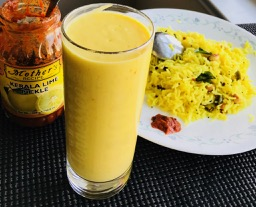

                                    <figure class="recipePage">                                        
                                        <figcaption class="caption">
                                        
                                            <!--  Copy your recipie in here -->
                                            <h1><span style="color: #ff6600;"><strong>Mango Lassi</strong></span>&nbsp;</h1>
<ul>
<li>Ripe mango 1</li>
<li>Milk 1 cup</li>
<li>Yoghurt 2 cups</li>
<li>Cashew nuts about 10</li>
<li>Almonds silvered about 2 tbsp</li>
<li>Brown sugar 2 tbsp (alternately honey could be used)</li>
<li>Saffron crushed a pinch</li>
<li>Ice 1 cup</li>
</ul>
<p>&nbsp;</p>
<p><strong>Method</strong></p>
<p>Peel skin of mango and dice.</p>
<p>Puree chopped mango in a blender. Add all the other ingredients and continue to blend till ice is crushed.</p>
<p>Serve chilled.</p>

                                            <!-- Copy Up to here-->

                                        </figcaption>
                                    
                                    </figure>
                            